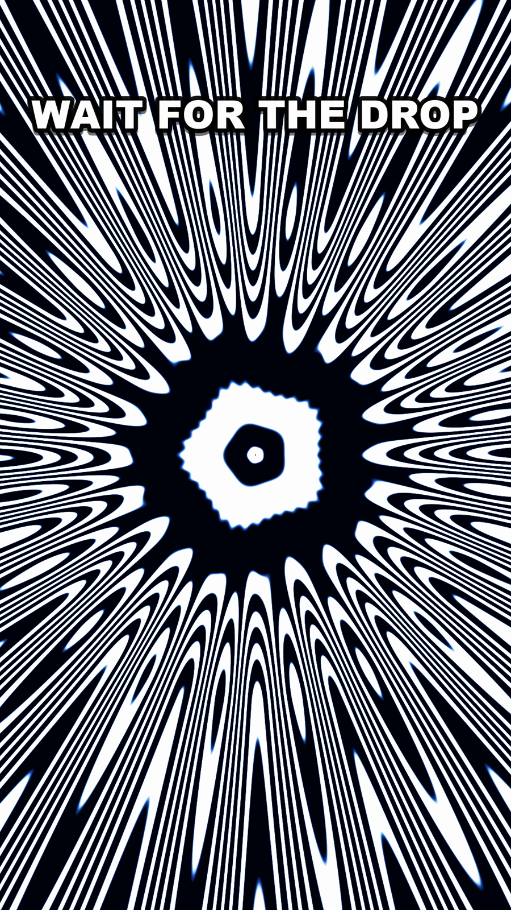

2026 · Motion · Series
Optical Illusion Series
A run of short pieces built from nothing but concentric rings, radial bursts and hard black-and-white edges — shapes chosen because they overload the visual system. Stare at the centre and the still parts of the frame start moving.
Designing against the eye
- Maximum contrast, no grey. The effects depend on hard edges. Any antialiasing softness weakens the response, so the geometry is drawn to land on pixel boundaries.
- A fixation point at the centre. Every piece gives the eye somewhere to lock, because the illusions only work in peripheral vision.
- Slow scale, fast rotation. The two rates are deliberately mismatched so the brain can't reconcile them into one motion.
- An instruction, not a title. Text on screen says what to do — "wait for the drop" — rather than naming the piece. It's a demonstration, so it needs a participant.
- The payoff is after it stops. These are built around the motion aftereffect: the strongest moment is a still frame that appears to drift.

These flash and pulse at high contrast by design. Anyone photosensitive should skip them.